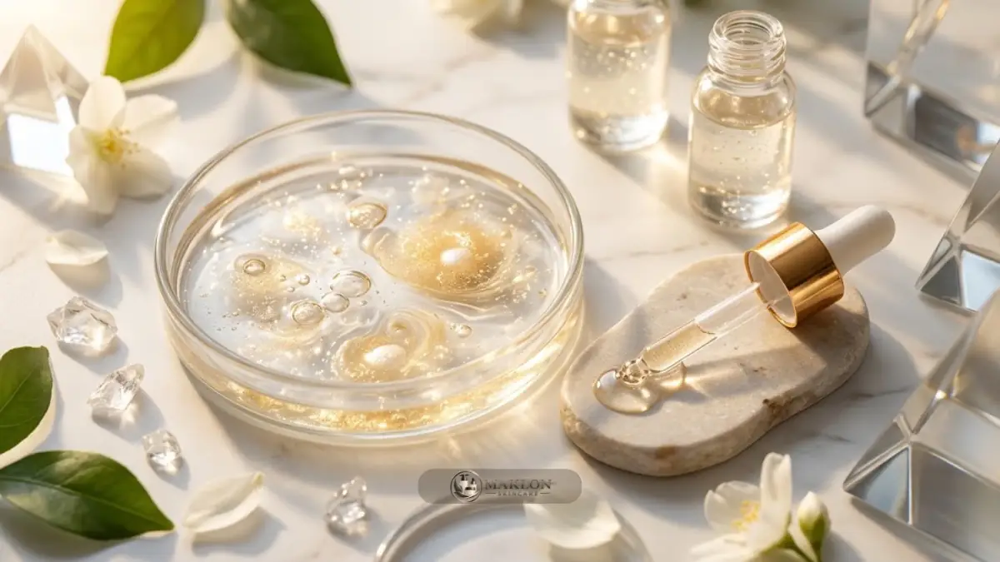

Formulasi brightening niacinamide alpha arbutin memadukan dua bahan pencerah berbeda mekanisme; niacinamide umumnya 2-5 persen, alpha arbutin hingga 2 persen menurut rujukan SCCS Eropa.
- Studi Hakozaki dkk. (British Journal of Dermatology, 2002) menemukan niacinamide 5 persen menurunkan hiperpigmentasi secara signifikan dibanding kontrol setelah 4 minggu pemakaian.
- SCCS Eropa (2023) menilai alpha arbutin aman hingga 2 persen pada krim wajah dan 0,5 persen pada body lotion.
- Brightening berarti membantu menampakkan warna kulit lebih merata, bukan memutihkan secara permanen.
- pH, pengawet, dan uji stabilitas sama pentingnya dengan kadar bahan aktif.
Apa Itu Formulasi Brightening dan Apa Tujuannya?
Formulasi brightening adalah racikan produk yang membantu tampilan kulit lebih cerah dan merata dengan mengurangi tampak noda gelap, bukan mengubah warna dasar kulit.
Brightening menyasar hiperpigmentasi, yaitu area kulit yang tampak lebih gelap karena produksi atau distribusi melanin yang berlebih, misalnya bekas jerawat atau paparan matahari.
Istilah ini berbeda secara mendasar dengan pemutihan (bleaching/whitening).
Klaim yang aman dan patuh regulasi fokus pada tampilan kulit lebih cerah atau merata, bukan menjanjikan hasil putih permanen.
Untuk pemula, formulasi brightening melibatkan empat unsur esensial: bahan aktif, basis pelarut dan penstabil bahan aktif, sistem pengawet antimikroba, serta pH yang sesuai.
Kegagalan di salah satunya dapat membuat produk menjadi tidak stabil, cepat teroksidasi, atau memicu reaksi tidak nyaman pada kulit.
Bagaimana Niacinamide Bekerja sebagai Bahan Pencerah?
Niacinamide, bentuk vitamin B3, bekerja dengan menghambat perpindahan melanosom dari sel melanosit ke keratinosit di lapisan epidermis.
Dengan terhambatnya perpindahan melanosom ini, tampak noda gelap berkurang dan warna kulit tampak lebih merata secara bertahap.
Penelitian Hakozaki dkk. dalam *British Journal of Dermatology* (2002) menemukan bahwa niacinamide menghambat transfer melanosom sebesar 35 hingga 68 persen pada model ko-kultur di laboratorium.
Pada uji klinis dengan 18 subjek, sediaan moisturizer niacinamide 5 persen menurunkan hiperpigmentasi dan meningkatkan kecerahan kulit secara signifikan dibanding kontrol setelah 4 minggu.
Hasil ini berasal dari kondisi studi tertentu dan tidak menjamin hasil yang sama persis pada setiap orang.
Niacinamide juga dikenal memiliki sifat antiinflamasi ringan dan membantu fungsi sawar kulit (skin barrier), sehingga sering dipilih sebagai bahan dasar produk brightening pada fasilitas maklon skincare.
Bagaimana Alpha Arbutin Bekerja sebagai Bahan Pencerah?
Alpha arbutin adalah turunan hidrokuinon terglikosilasi yang umumnya dipahami menghambat kerja enzim tirosinase.
Dengan menekan enzim tirosinase di hulu, pembentukan pigmen melanin baru dapat berkurang secara bertahap.
Berbeda dengan niacinamide yang bekerja di jalur perpindahan, alpha arbutin bekerja langsung di hulu produksi melanin.
Scientific Committee on Consumer Safety (SCCS) Uni Eropa pada Januari 2023 menyimpulkan bahwa alpha arbutin aman pada krim wajah hingga 2 persen dan pada body lotion hingga 0,5 persen, juga bila dipakai bersamaan.
Batas keamanan ilmiah ini kemudian dimuat secara formal dalam Regulasi Uni Eropa 2024/996.
SCCS juga menegaskan kadar hidrokuinon bebas dalam produk berbahan alpha arbutin harus serendah mungkin dan tidak melebihi kadar jejak yang tak terhindarkan.
Oleh karena itu, kualitas sertifikat analisis (CoA) dan kemurnian bahan baku dari pemasok terpercaya sangat penting.
Mengapa Niacinamide dan Alpha Arbutin Sering Dikombinasikan?
Keduanya sering dikombinasikan karena bekerja pada tahap berbeda, yaitu niacinamide pada perpindahan pigmen dan alpha arbutin pada pembentukan melanin, sehingga formula terlihat saling melengkapi.
Pendekatan kombinasi bahan aktif pencerah bukanlah hal baru dalam dermatologi kosmetik.
Studi acak berkontrol pada 42 wanita Korea selama 8 minggu menunjukkan kombinasi niacinamide dan asam traneksamat lebih efektif mengurangi tampak pigmentasi dibanding kontrol, menurut jurnal *Skin Research and Technology* (2014).
Studi tersebut memang tidak menguji alpha arbutin, tetapi menggambarkan logika kombinasi bahan dengan mekanisme kerja yang berbeda.
Perlu dicatat, bukti klinis untuk kombinasi spesifik niacinamide dan alpha arbutin dalam satu formula terbatas pada data yang tersedia bagi pembaca umum.
Pabrik manufaktur atau formulator sebaiknya mendukung klaim sediaan dengan data uji laboratorium pada produk jadi.
Berapa Kadar Niacinamide dan Alpha Arbutin yang Umum Dipakai?
Niacinamide umumnya dipakai pada kisaran 2 hingga 5 persen, sedangkan alpha arbutin umumnya hingga 2 persen pada produk wajah, sesuai rujukan batas keamanan SCCS Eropa.
| Bahan Aktif | Kisaran Umum | Catatan Regulasi & Uji |
|---|---|---|
| Niacinamide | 2 sampai 5 persen | Studi klinis memakai 2, 4, dan 5 persen |
| Alpha arbutin (Wajah) | Hingga 2 persen | Batas aman SCCS untuk krim dan serum wajah |
| Alpha arbutin (Body lotion) | Hingga 0,5 persen | Batas aman SCCS untuk sediaan body care |
Angka ini adalah rujukan umum bagi formulator, bukan resep final yang kaku.
Kadar akhir ditentukan formulator dengan mempertimbangkan stabilitas, kenyamanan, dan aturan yang berlaku di Indonesia.
Kadar lebih tinggi tidak otomatis menghasilkan hasil lebih baik dan justru dapat meningkatkan risiko iritasi kulit.
Bagaimana Struktur Dasar Formula Serum Brightening?
Struktur dasar serum brightening terdiri dari fase air, humektan, bahan aktif, pengental, chelator, penyesuai pH, pengawet, dan bahan penenang, yang masing-masing punya fungsi spesifik.

| Komponen | Fungsi Formulasi | Rentang Ilustratif |
|---|---|---|
| Air (Aqua demineralisata) | Pelarut utama sediaan | Hingga 100 persen |
| Humektan (Gliserin) | Menarik dan menjaga kelembapan kulit | 3 sampai 5 persen |
| Niacinamide | Bahan aktif pencerah & barrier | 2 sampai 5 persen |
| Alpha arbutin | Bahan aktif pencerah tirosinase | Hingga 2 persen |
| Pengental (Thickener) | Mengatur tekstur dan viskositas cairan | Sesuai bahan pilihan |
| Chelator (Disodium EDTA) | Menjaga stabilitas dari ion logam | Dalam jumlah kecil |
| Penyesuai pH (Citric Acid/TEA) | Mengatur derajat keasaman formula | Secukupnya (q.s.) |
| Pengawet (Preservative) | Mencegah cemaran bakteri dan mikroba | Sesuai batas regulasi |
Tabel ini disajikan sebagai kerangka belajar dasar dalam memahami anatomi formulasi kosmetik.
Formula nyata harus disusun dan diuji oleh formulator berpengalaman, dan semua bahan harus sesuai dengan peraturan BPOM.
Bagaimana Urutan Pembuatan Serum Skala Kecil?
Urutan umum adalah melarutkan humektan dan pengental di air, melarutkan bahan aktif, menurunkan suhu, menambah bahan sensitif panas dan pengawet, lalu menyesuaikan pH dan memeriksa hasilnya.
Alpha arbutin umumnya dilarutkan di air hangat dan didinginkan sebelum bahan sensitif suhu ditambahkan ke dalam wadah pencampuran.
Pengawet ditambahkan sesuai petunjuk teknis pemasok, karena suhu dan tingkat pH sangat memengaruhi efektivitas daya awetnya.
Setelah semua tercampur merata, ukur derajat keasaman dengan pH meter terkalibrasi dan catat hasilnya pada lembar kerja formulasi.
Percobaan skala kecil di laboratorium cocok untuk sarana belajar riset, tetapi produk yang akan dijual bebas sebaiknya diproduksi pada fasilitas bersertifikat CPKB.
Dokumentasikan setiap batch uji coba untuk memastikan konsistensi sediaan pada tahapan scale-up produksi massal.
Mengapa pH dan Stabilitas Penting?
pH dan stabilitas penting karena memengaruhi kenyamanan, efektivitas bahan aktif, dan keawetan produk di tangan konsumen.
Niacinamide dan alpha arbutin umumnya paling nyaman dan stabil pada pH mendekati netral hingga sedikit asam, yaitu kisaran pH sekitar 5 hingga 6,5.
Pada kondisi asam kuat atau terpapar suhu tinggi dalam waktu lama, niacinamide dapat terurai menjadi asam nikotinat yang berpotensi menimbulkan sensasi kemerahan pada sebagian orang.
Alpha arbutin juga dapat berkurang kualitasnya dan terdegradasi bila terpapar panas berlebih atau derajat keasaman ekstrem.
Karena itu, pengujian stabilitas sediaan pada suhu dan kondisi simpan berbeda wajib dilakukan, termasuk uji kompatibilitas formula dengan bahan botol kemasan.
Perubahan warna cairan, bau yang menyimpang, atau perubahan viskositas menandakan terjadinya masalah instabilitas formula.
Apa Kesalahan Umum Pemula dalam Formulasi Brightening?
Kesalahan umum meliputi menaikkan kadar aktif secara berlebihan, mengabaikan sistem pengawet, tidak mengukur pH, melewatkan uji stabilitas, memakai bahan baku tidak jelas kemurniannya, dan membuat klaim hasil instan.
Pemula sering mengira kadar bahan aktif tinggi berarti hasil pencerahan akan datang lebih cepat.
Padahal kadar yang melampaui batas dapat menimbulkan iritasi kulit dan melanggar batasan rujukan keselamatan internasional.
Kesalahan lain adalah memakai bahan baku tanpa sertifikat analisis (CoA) atau spesifikasi yang jelas dari pemasok resmi.
Hindari pula mencampurkan bahan-bahan yang dilarang undang-undang kosmetik.
Menurut pakar UGM, pada 2025 BPOM menarik lebih dari 100 produk kosmetik karena terbukti mengandung bahan berbahaya seperti merkuri, hidrokuinon tanpa resep medis, dan asam retinoat.
Bagaimana Kaitan Formulasi Brightening dengan Regulasi dan Maklon?
Produk brightening yang dijual di Indonesia wajib berizin edar berupa notifikasi resmi BPOM.
Bila diproduksi lewat jalur maklon skincare OEM, pabrik wajib menerapkan standar CPKB sementara pemilik notifikasi bertanggung jawab penuh atas keamanan produk di pasaran.
BPOM mencatat lebih dari 1.500 pelaku industri kosmetik pada 2025, sehingga banyak pilihan pabrik mitra tersedia, tetapi standar kualitasnya sangat beragam.
Pilihlah pabrik dengan sertifikat CPKB yang sesuai bentuk sediaan serum, mintalah laporan uji mutu, dan sepakati klausul kepemilikan formula secara tertulis.
Panduan checklist teknis proyek OEM/ODM dan artikel mitos serta fakta OEM/ODM skincare sangat membantu pematangan persiapan bisnis Anda.
Untuk sisi perhitungan finansial, pelajari pula panduan perhitungan biaya dan margin profit formulasi brightening.
Apakah Produk Brightening Aman untuk Semua Kulit?
Tidak selalu. Kulit sensitif atau berpenyakit dapat bereaksi terhadap bahan aktif pencerah tertentu.
Uji tempel (patch test) dan konsultasi dengan dokter spesialis kulit sangat disarankan sebelum produk dipakai secara rutin.
Informasi di artikel ini bersifat edukasi umum dan bukan merupakan saran medis formal.
Orang dengan melasma parah, kondisi kulit tertentu, masa kehamilan, atau yang sedang memakai obat oles dokter perlu berkonsultasi dengan dokter ahli.
Penggunaan tabir surya setiap pagi tetap wajib karena paparan radiasi sinar ultraviolet dapat memperburuk hiperpigmentasi kulit.
Pihak brand sebaiknya mencantumkan petunjuk pemakaian bertahap dan peringatan keamanan yang jelas pada label kemasan produk.
Konsultasikan Formulasi Serum Brightening Impian Anda
Ingin mengembangkan produk serum atau krim pencerah dengan kombinasi Niacinamide dan Alpha Arbutin berstandar CPKB, izin BPOM, dan sertifikasi Halal? Diskusikan ide formula, sampel lab, dan minimal pesanan bersama tim formulator kami melalui layanan konsultasi formulasi maklon skincare sekarang juga.
Kesimpulan: 4 Pilar Formulasi Brightening Berkualitas
Formulasi brightening niacinamide alpha arbutin yang baik memadukan bahan aktif berbasis bukti, kadar sesuai rujukan, pH stabil, pengawet tepat, dan produksi di fasilitas bersertifikat CPKB dengan notifikasi BPOM.
- Rujuk kadar umum yang terbukti: niacinamide 2-5 persen dan alpha arbutin hingga 2 persen.
- Periksa kemurnian bahan baku serta pastikan kadar hidrokuinon bebas berada di bawah batas cemaran.
- Ukur derajat keasaman (pH 5,0-6,5) dan lakukan pengujian stabilitas sediaan secara disiplin.
- Hindari membuat klaim hasil instan atau memutihkan secara permanen.
Catatan: Artikel ini bersifat informasi ilmiah umum, bukan nasihat medis atau regulasi hukum. Konsultasikan dengan formulator ahli, dokter spesialis kulit, atau BPOM untuk keputusan teknis spesifik.